Generalized Additive Models
An introduction
BIO 8940
2026-03-23
Required packages and datasets
For this class, we will be working with the following dataset:
You should also make sure you have downloaded, installed, and loaded the following packages:
Class overview
- The linear model… and where it fails
- Introduction to GAMs
- How GAMs work
- GAMs with multiple smooth terms
- GAMs with interaction terms
- GAM validation
- Choosing another distribution
- Changing the basis function
- Quick introduction to GAMMs (Mixed effect GAMs)
Learning objectives
- Use the
mgcvpackage to fit non-linear relationships, - Understand the output of a Generalized Additive Model (GAM) to help you understand your data,
- Use tests to determine if a non-linear model fits better than a linear one,
- Include smooth interactions between variables,
- Understand the idea of a basis function, and why it makes GAMs so powerful,
- Account for dependence in data (autocorrelation, hierarchical structure) using GAMMs.
The linear model
… and where it fails
Linear regression
Linear model with multiple predictors:
\[y_i = \beta_0 + \beta_1x_{1,i}+\beta_2x_{2,i}+\beta_3x_{3,i}+...+\beta_kx_{k,i} + \epsilon_i\]
As we saw in previous class, a linear model is based on four major assumptions:
- Linear relationship between response and predictor variables
- Normally distributed error: \[\epsilon_i \sim \mathcal{N}(0,\,\sigma^2)\]
- Homogeneity of the errors’ variance
- Independence of the errors (homoscedasticity)
Linear regression
Linear models work very well in certain specific cases where all these criteria are met:
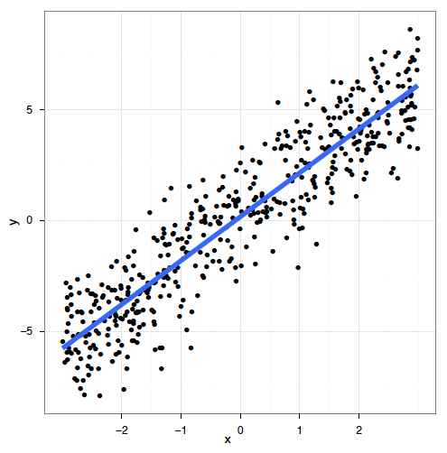
Linear regression
In reality, we often cannot meet these criteria. In many cases, linear models are inappropriate:
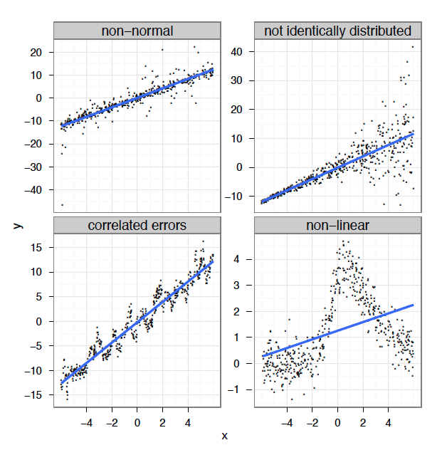
Linear regression
What’s the problem and do we fix it?
A linear model tries to fit the best straight line that passes through the data, so it doesn’t work well for all datasets.
In contrast, a GAM can capture complexe relationships by fitting a non-linear smooth function through the data, while controlling how wiggly the smooth can get (more on this later).
Introduction to GAMs
Generalized Additive Models (GAM)
Let us use an example to demonstrate the difference between a linear regression and an additive model.
First, we will load the ISIT dataset.
This dataset is comprised of bioluminescence levels (
Sources) in relation to depth, seasons and different stations.
For now, we will be focusing on Season 2.
Let’s begin by trying to fit a linear regression model to the relationship between Sources and SampleDepth.
Generalized Additive Models (GAM)
Family: gaussian
Link function: identity
Formula:
Sources ~ SampleDepth
Parametric coefficients:
Estimate Std. Error t value Pr(>|t|)
(Intercept) 30.9021874 0.7963891 38.80 <2e-16 ***
SampleDepth -0.0083450 0.0003283 -25.42 <2e-16 ***
---
Signif. codes: 0 '***' 0.001 '**' 0.01 '*' 0.05 '.' 0.1 ' ' 1
R-sq.(adj) = 0.588 Deviance explained = 58.9%
GCV = 60.19 Scale est. = 59.924 n = 453The linear model is explaining quite a bit of variance in our dataset ( \(R_{adj}\) = 0.588), which means it’s a pretty good model, right?
Generalized Additive Models (GAM)
Well, let’s take a look at how our model fits the data:
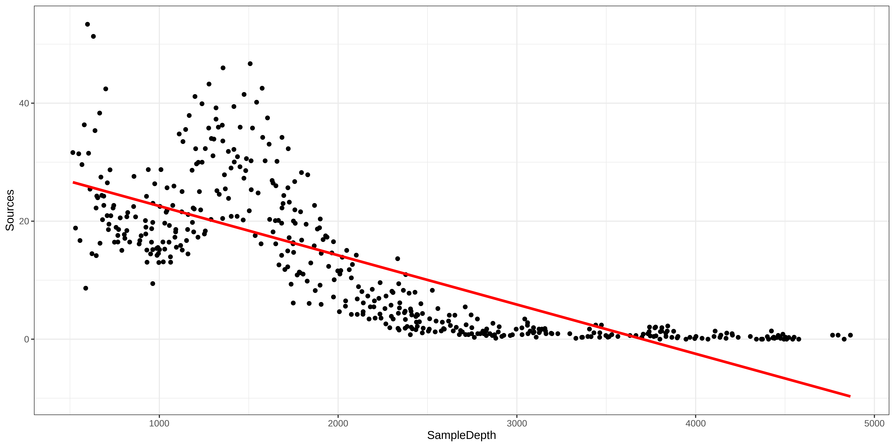
Generalized Additive Models (GAM)
Relationship between the response variable and predictor variables
One predictor variable: \[y_i = \beta_0 + f(x_i) + \epsilon\]
Multiple predictor variables: \[y_i = \beta_0 + f_1(x_{1,i}) + f_2(x_{2,i}) + ... + \epsilon\]
One big advantage of using a GAM over a manual specification of the model is that the optimal shape, i.e. the degree of smoothness of \(f(x)\), is determined automatically depending on the fitting method (usually maximum likelihood).
Generalized Additive Models (GAM)
Let’s try to fit a model to the data using a smooth function s() with mgcv::gam()
Family: gaussian
Link function: identity
Formula:
Sources ~ s(SampleDepth)
Parametric coefficients:
Estimate Std. Error t value Pr(>|t|)
(Intercept) 12.8937 0.2471 52.17 <2e-16 ***
---
Signif. codes: 0 '***' 0.001 '**' 0.01 '*' 0.05 '.' 0.1 ' ' 1
Approximate significance of smooth terms:
edf Ref.df F p-value
s(SampleDepth) 8.908 8.998 214.1 <2e-16 ***
---
Signif. codes: 0 '***' 0.001 '**' 0.01 '*' 0.05 '.' 0.1 ' ' 1
R-sq.(adj) = 0.81 Deviance explained = 81.4%
GCV = 28.287 Scale est. = 27.669 n = 453Generalized Additive Models (GAM)
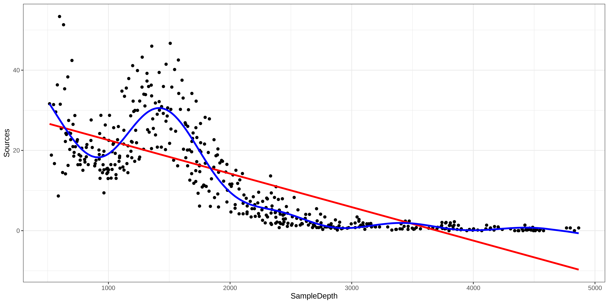
Note: as opposed to one fixed coefficient, \(\beta\) in linear regression, the smooth function can continually change over the range of the predictor \(x\).
Generalized Additive Models (GAM)
The mgcv package also includes a default plot() function to look at the smooths:
Test for linearity using GAM
How do we test whether the non-linear model offers a significant improvement over the linear model?
We can use gam() and AIC() to compare the performance of a linear model containing x as a linear predictor to the performance of a non-linear model containing s(x) as a smooth predictor.
df AIC
linear_model 3.00000 3143.720
smooth_model 10.90825 2801.451Here, the AIC of the smooth GAM is lower, which indicates that adding a smoothing function improves model performance. Linearity is therefore not supported by our data.
Test for linearity using GAM
We can use gam() and anova() to test whether an assumption of linearity is justified. To do so, we must simply set our smoothed model so that it is nested in our linear model.
Exercise 1
Exercise 1
We will now try to determine whether this the data recorded in the first season should be modelled with a linear regression, or with an additive model.
Let’s repeat the comparison test with gam() and AIC() using the data recorded in the first season only:
- Fit a linear and smoothed GAM model to the relation between
SampleDepthandSources. - Determine if linearity is justified for this data.
- How many effective degrees of freedom does the smoothed term have?
Exercise 1 - Solution
1. Fit a linear and smoothed GAM model to the relation between SampleDepth and Sources.
Exercise 1 - Solution
2. Determine whether a linear model is appropriate for this data.
As before, visualizing the model fit on our dataset is an excellent first step to determine whether our model is performing well.
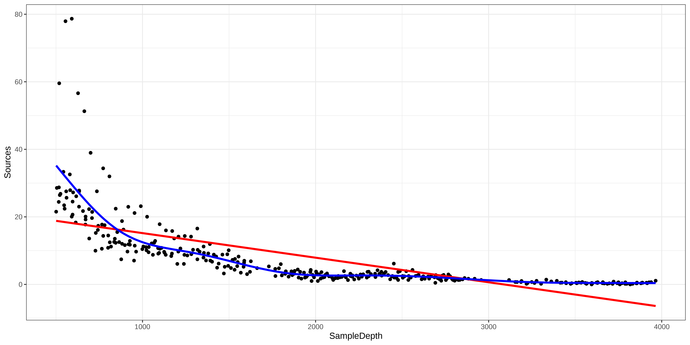
Exercise 1 - Solution
We can supplement this with a quantitative comparison of model performance using AIC() or a \(\chi^2\).
df AIC
linear_model_s1 3.000000 2324.905
smooth_model_s1 9.644938 2121.249The lower AIC score indicates that smooth model is performing better than the linear model, which confirms that linearity is not appropriate for our dataset.
Exercise 1 - Solution
3. How many effective degrees of freedom does the smoothed term have?
To get the effective degrees of freedom, we can simply print the model object:
Family: gaussian
Link function: identity
Formula:
Sources ~ s(SampleDepth)
Estimated degrees of freedom:
7.64 total = 8.64
GCV score: 32.13946 The effective degrees of freedom (EDF) are >> 1.
Keep this in mind, because we will be coming back to EDF soon!
3. How GAMs work
How GAMs work
We will now take a few minutes to look at what GAMs are doing behind the scenes. Let us first consider a simple model containing one smooth function \(f\) of one covariate, \(x\):
\[y_i = f(x_i) + \epsilon_i\]
To estimate the smooth function \(f\), we need to represented the above equation in such a way that it becomes a linear model. This can be done by defining basis functions, \(b_j(x)\), of which \(f\) is composed:
\[f(x) = \sum_{j=1}^q b_j(x) \times \beta_j\]
Example: a polynomial basis
Suppose that \(f\) is believed to be a 4th order polynomial, so that the space of polynomials of order 4 and below contains \(f\). A basis for this space would then be:
\[b_0(x)=1 \ , \quad b_1(x)=x \ , \quad b_2(x)=x^2 \ , \quad b_3(x)=x^3 \ , \quad b_4(x)=x^4\]
so that \(f(x)\) becomes:
\[f(x) = \beta_0 + x\beta_1 + x^2\beta_2 + x^3\beta_3 + x^4\beta_4\]
and the full model now becomes:
\[y_i = \beta_0 + x_i\beta_1 + x^2_i\beta_2 + x^3_i\beta_3 + x^4_i\beta_4 + \epsilon_i\]
Example: a polynomial basis
The basis functions are each multiplied by a real valued parameter, \(\beta_j\), and are then summed to give the final curve \(f(x)\). Here is an example of a polynomial basis of order 4.
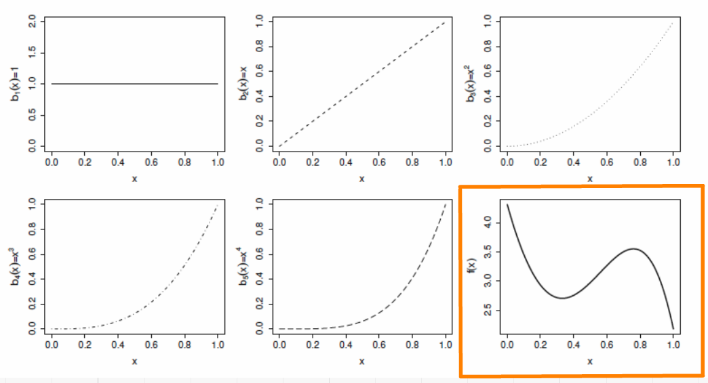
Example: a cubic spline basis
A cubic spline is a curve constructed from sections of a cubic polynomial joined together so that they are continuous in value. Each section of cubic has different coefficients.
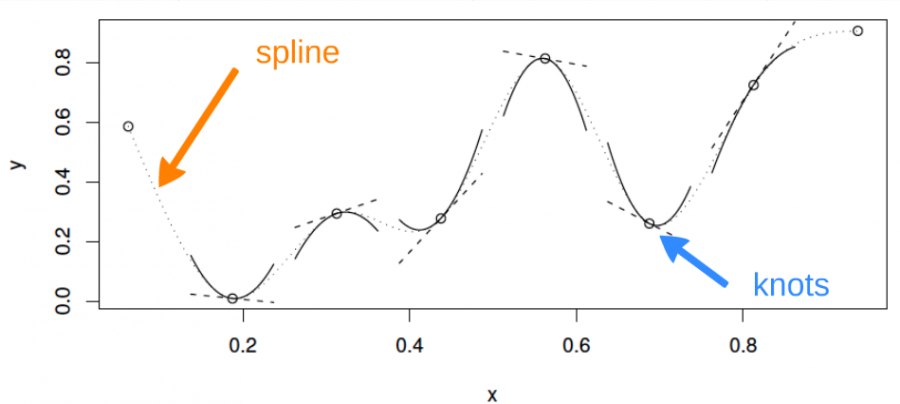
Example: a cubic spline basis
Here is a representation of a smooth function using a rank 5 cubic spline basis with knot locations at increments of 0.2:
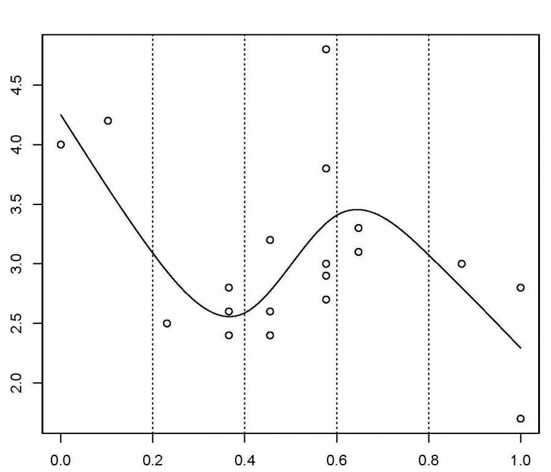
Here, the knots are evenly spaced through the range of observed x values. However, the choice of the degree of model smoothness is controlled by the the number of knots, which was arbitrary.
Is there a better way to select the knot locations?
Controlling the degree of smoothing
Instead of controlling smoothness by altering the number of knots, we keep that fixed to size a little larger than reasonably necessary, and control the model’s smoothness by adding a “wiggleness” penalty.
So, rather than fitting the model by minimizing (as with least squares regression):
\[||y - XB||^{2}\]
it can be fit by minimizing:
\[||y - XB||^{2} + \lambda \int_0^1[f^{''}(x)]^2dx\]
As \(\lambda\) goes to infinity, the model becomes linear.
Controlling the degree of smoothing
If \(\lambda\) is too high then the data will be over smoothed, and if it is too low then the data will be under smoothed.
Ideally, it is best to choose \(\lambda\) so that the predicted \(\hat{f}\) is as close as possible to \(f\). A suitable criterion might be to choose \(\lambda\) to minimize:
\[M = 1/n \times \sum_{i=1}^n (\hat{f_i} - f_i)^2\]
Since \(f\) is unknown, \(M\) must be estimated.
The recommend methods for this are maximum likelihood (ML) or restricted maximum likelihood estimation (REML). Generalized cross validation (GCV) is another possibility.
The principle behind cross validation
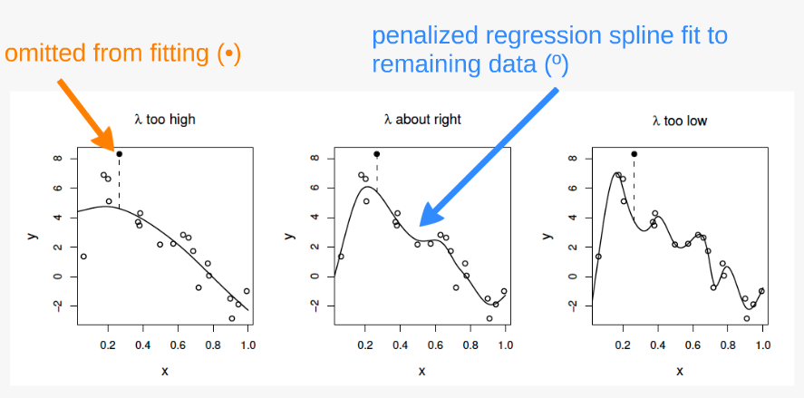
fits many of the data poorly and does no better with the missing point.
fits the underlying signal quite well, smoothing through the noise and the missing datum is reasonably well predicted.
fits the noise as well as the signal and the extra variability induced causes it to predict the missing datum rather poorly.
4. GAM with multiple smooth terms
GAM with linear and smooth terms
GAMs make it easy to include both smooth and linear terms, multiple smoothed terms, and smoothed interactions.
For this section, we will use the ISIT data again. We will try to model the response Sources using the predictors Season and SampleDepth simultaneously.
First, we need to convert our categorical predictor (Season) into a factor variable.
GAM with linear and smooth terms
Let us start with a basic model, with one smoothed term (SampleDepth) and one categorical predictor (Season, which has 2 levels).
Family: gaussian
Link function: identity
Formula:
Sources ~ Season + s(SampleDepth)
Parametric coefficients:
Estimate Std. Error t value Pr(>|t|)
(Intercept) 7.2533 0.3613 20.08 <2e-16 ***
Season2 6.1561 0.4825 12.76 <2e-16 ***
---
Signif. codes: 0 '***' 0.001 '**' 0.01 '*' 0.05 '.' 0.1 ' ' 1
Approximate significance of smooth terms:
edf Ref.df F p-value
s(SampleDepth) 8.706 8.975 184.4 <2e-16 ***
---
Signif. codes: 0 '***' 0.001 '**' 0.01 '*' 0.05 '.' 0.1 ' ' 1
R-sq.(adj) = 0.692 Deviance explained = 69.5%
-REML = 2615.8 Scale est. = 42.413 n = 789GAM with linear and smooth terms
What do these plots tell us about the relationship between bioluminescence, sample depth, and seasons?
Effective degrees of freedom (EDF)
The edf shown in the s.table are the effective degrees of freedom (EDF) of the the smooth term s(SampleDepth).
Essentially, more EDF imply more complex, wiggly splines:
A value close to 1 tends to be close to a linear term.
A higher value means that the spline is more wiggly (non-linear).
In our basic model the EDF of the smooth function s(SampleDepth) are ~9, which suggests a highly non-linear curve.
Effective degrees of freedom (EDF)
Let us come back to the concept of effective degrees of freedom (EDF).
Effective degrees of freedom give us a lot of information about the relationship between model predictors and response variables.
You might recognize the term “degrees of freedom” from previous classs about linear models, but be careful!
The effective degrees of freedom of a GAM are estimated differently from the degrees of freedom in a linear regression, and are interpreted differently.
In linear regression, the model degrees of freedom are equivalent to the number of non-redundant free parameters \(p\) in the model, and the residual degrees of freedom are given by \(n-p\).
Because the number of free parameters in GAMs is difficult to define, the EDF are instead related to the smoothing parameter \(\lambda\), such that the greater the penalty, the smaller the EDF.
Effective degrees of freedom (EDF) and \(k\)
An upper bound on the EDF is determined by the basis dimension \(k\) for each smooth function (the EDF cannot exceed \(k-1\))
In practice, the exact choice of \(k\) is arbitrary, but it should be large enough to accommodate a sufficiently complex smooth function.
We will talk about choosing \(k\) in upcoming sections.
GAM with linear and smooth terms
We can add a second term, RelativeDepth, but specify a linear relationship with Sources
Family: gaussian
Link function: identity
Formula:
Sources ~ Season + s(SampleDepth) + RelativeDepth
Parametric coefficients:
Estimate Std. Error t value Pr(>|t|)
(Intercept) 9.8083055 0.6478742 15.139 < 2e-16 ***
Season2 6.0419306 0.4767978 12.672 < 2e-16 ***
RelativeDepth -0.0014019 0.0002968 -4.723 2.76e-06 ***
---
Signif. codes: 0 '***' 0.001 '**' 0.01 '*' 0.05 '.' 0.1 ' ' 1
Approximate significance of smooth terms:
edf Ref.df F p-value
s(SampleDepth) 8.699 8.974 132.5 <2e-16 ***
---
Signif. codes: 0 '***' 0.001 '**' 0.01 '*' 0.05 '.' 0.1 ' ' 1
R-sq.(adj) = 0.7 Deviance explained = 70.4%
-REML = 2612 Scale est. = 41.303 n = 789GAM with linear and smooth terms
GAM with multiple smooth terms
We can model RelativeDepth as a smooth term instead.
Family: gaussian
Link function: identity
Formula:
Sources ~ Season + s(SampleDepth) + s(RelativeDepth)
Parametric coefficients:
Estimate Std. Error t value Pr(>|t|)
(Intercept) 7.9378 0.3453 22.99 <2e-16 ***
Season2 4.9640 0.4782 10.38 <2e-16 ***
---
Signif. codes: 0 '***' 0.001 '**' 0.01 '*' 0.05 '.' 0.1 ' ' 1
Approximate significance of smooth terms:
edf Ref.df F p-value
s(SampleDepth) 8.752 8.973 150.37 <2e-16 ***
s(RelativeDepth) 8.044 8.750 19.98 <2e-16 ***
---
Signif. codes: 0 '***' 0.001 '**' 0.01 '*' 0.05 '.' 0.1 ' ' 1
R-sq.(adj) = 0.748 Deviance explained = 75.4%
-REML = 2550.1 Scale est. = 34.589 n = 789GAM with multiple smooth terms
Let us take a look at the relationships between the linear and non-linear predictors and our response variable.
GAM with multiple smooth terms
As before, we can compare our models with AIC to test whether the smoothed term improves our model’s performance.
df AIC
basic_model 11.83374 5208.713
two_term_model 12.82932 5188.780
two_smooth_model 20.46960 5056.841We can see that
two_smooth_modelhas the lowest AIC value.
The best fit model includes both smooth terms for SampleDepth and RelativeDepth, and a linear term for Season.
Exercise 2
Exercise 2
For our second Exercise, we will be building onto our model by adding variables which we think might be ecologically significant predictors to explain bioluminescence.
- Create two new models: Add
Latitudetotwo_smooth_model, first as a linear term, then as a smooth term. - Is
Latitudean important term to include? DoesLatitudehave a linear or additive effect?
Use plots, coefficient tables, and the
AIC()function to help you answer this question.
Exercise 2 - Solution
1. Create two new models: Add Latitude to two_smooth_model, first as a linear term, then as a smooth term.
# Add Latitude as a linear term
three_term_model <- gam(
Sources ~
Season + s(SampleDepth) + s(RelativeDepth) + Latitude, #<<
data = isit,
method = "REML"
)
# Add Latitude as a smooth term
three_smooth_model <- gam(
Sources ~
Season + s(SampleDepth) + s(RelativeDepth) + s(Latitude), #<<
data = isit,
method = "REML"
)Exercise 2 - Solution
2. Is Latitude an important term to include? Does Latitude have a linear or additive effect?
Let us begin by plotting the the 4 effects that are now included in each model.
Exercise 2 - Solution
We should also look at our coefficient tables. What can the EDF tell us about the wiggliness of our predictors’ effects?
edf Ref.df F p-value
s(SampleDepth) 8.766891 8.975682 68.950905 0
s(RelativeDepth) 8.007411 8.730625 17.639321 0
s(Latitude) 7.431116 8.296838 8.954349 0The EDF are all quite high for all of our smooth variables, including Latitude.
This tells us that Latitude is quite wiggly, and probably should not be included as a linear term.
Exercise 2 - Solution
Before deciding which model is “best”, we should test whether Latitude is best included as a linear or as a smooth term, using AIC():
df AIC
three_smooth_model 28.20032 4990.546
three_term_model 21.47683 5051.415Our model including Latitude as a smooth term has a lower AIC score, meaning it performs better than our model including Latitude as a linear term.
But, does adding Latitude as a smooth predictor actually improve on our last “best” model (two_smooth_model)?
Exercise 2 - Solution
df AIC
two_smooth_model 20.46960 5056.841
three_smooth_model 28.20032 4990.546Our three_smooth_model has a lower AIC score than our previous best model (two_smooth_model), which did not include Latitude.
This implies that Latitude is indeed an informative non-linear predictor of bioluminescence.
4. Interactions
GAM with interaction terms
There are two ways to include interactions between variables:
for two smoothed variables :
s(x1, x2)for one smoothed variable and one linear variable (either factor or continuous): use the
byarguments(x1, by = x2)When
x2is a factor, you have a smooth term that vary between different levels ofx2When
x2is continuous, the linear effect ofx2varies smoothly withx1When
x2is a factor, the factor needs to be added as a main effect in the model
Interaction smoothed & factor variables
We will examine interaction effects to determine whether the non-linear smoother s(SampleDepth) varies across different levels of Season.
edf Ref.df F p-value
s(SampleDepth):Season1 6.839386 7.552045 95.119422 0
s(SampleDepth):Season2 8.744574 8.966290 154.474325 0
s(RelativeDepth) 6.987223 8.055898 6.821074 0Interaction smoothed & factor variables
Interaction smoothed & factor variables
We can also visualise our model in 3D using vis.gam().
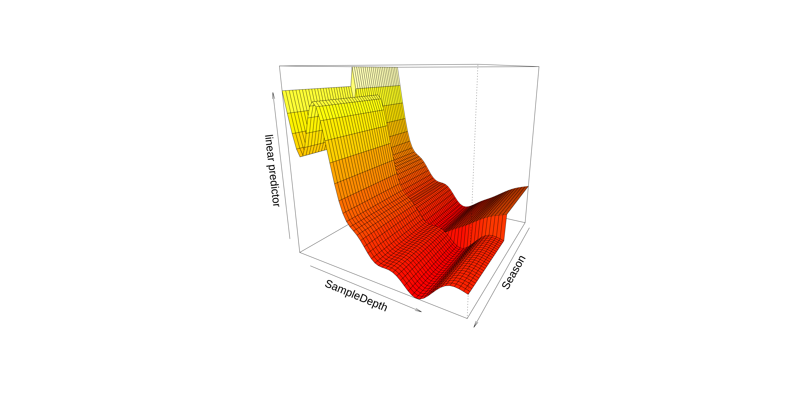
Interaction smoothed & factor variables
These plots hint that the interaction effect could be important to include in our model.
We will perform a model comparison using AIC to determine whether the interaction term improves our model’s performance.
df AIC
two_smooth_model 20.46960 5056.841
factor_interact 26.99693 4878.631The AIC of our model with a factor interaction between the SampleDepth smooth and Season has a lower AIC score.
Together, the AIC and the plots confirm that including this interaction improves our model’s performance.
Interaction: two smoothed variables
Next, we’ll look at the interactions between two smoothed terms, SampleDepth and RelativeDepth.
Interaction: two smoothed variables
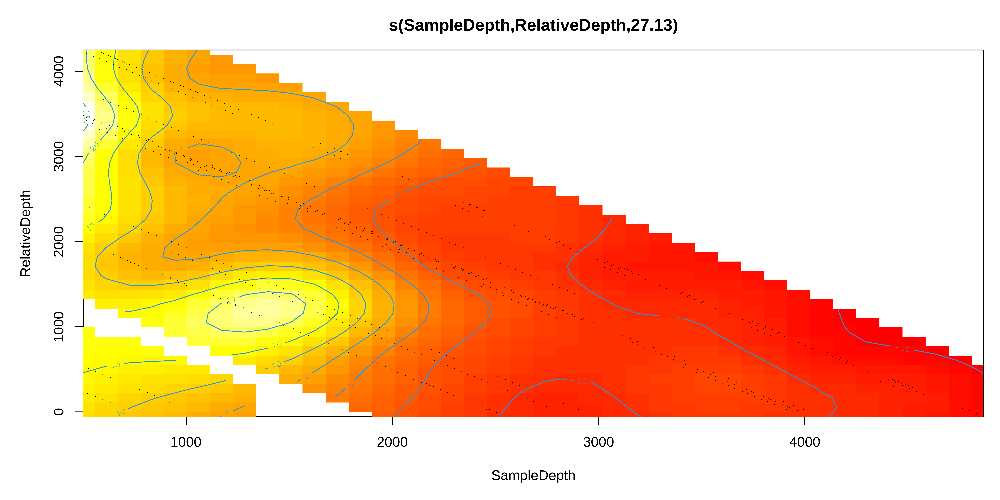
Interaction: two smoothed variables
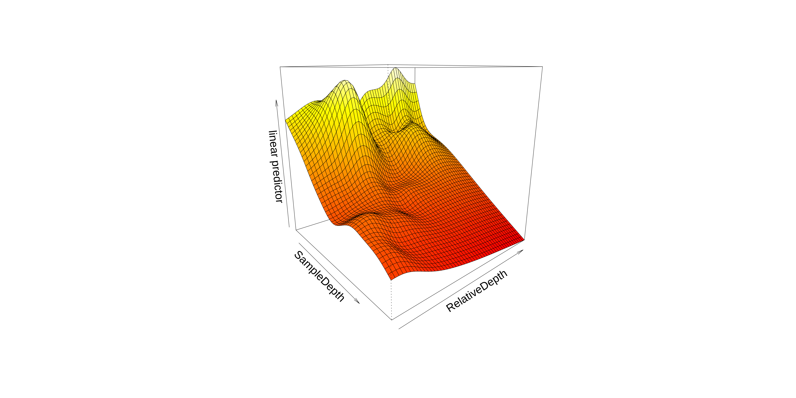
Interaction: two smoothed variables
So, we can see an interaction effect between these smooth terms in these plots.
Does including the interaction between s(SampleDepth) and s(RelativeDepth) improve our two_smooth_model model?
df AIC
two_smooth_model 20.46960 5056.841
smooth_interact 30.33625 4943.890The model with the interaction between s(SampleDepth) and s(RelativeDepth) has a lower AIC.
This means that the non-linear interaction improves our model’s performance, and our ability to understand the drivers of bioluminescence!
5. Generalization of the additive model
Generalization of the additive model
The basic additive model can be extended in the following ways:
- Using other distributions for the response variable with the
familyargument (just as in a GLM), - Using different kinds of basis functions,
- Using different kinds of random effects to fit mixed effect models.
We will now go over these aspects.
Generalized additive models
We have so far worked with simple (Gaussian) additive models, the non-linear equivalent to a linear model.
But, what can we do if: - the observations of the response variable do not follow a normal distribution? - the variance is not constant? (heteroscedasticity)
These cases are very common!
Just like generalized linear models (GLM), we can formulate generalized additive models to deal with these issues.
Generalized additive models
Let us return to our smooth interaction model for the bioluminescence data:
Estimate Std. Error t value Pr(>|t|)
(Intercept) 8.077356 0.4235432 19.070912 1.475953e-66
Season2 4.720806 0.6559436 7.196969 1.480113e-12 edf Ref.df F p-value
s(SampleDepth,RelativeDepth) 27.12521 28.77 93.91722 06. GAM validation
GAM validation
As with a GLM, it is essential to check whether the model is correctly specified, especially in regards to the distribution of the response variable.
We need to verify:
- The choice of basis dimension
k. - The residuals plots (just as for a GLM).
- The concurvity (equivalent of collinearity for smooth terms)
Useful functions included in mgcv:
k.check()performs a basis dimension check.gam.check()produces residual plots (and also callsk.check()).concurvity()produces summary measures of concurvity between gam components.
Selecting \(k\) basis dimensions
Remember the smoothing parameter \(\lambda\), which constrains the wiggliness of our smoothing functions?
This wiggliness is further controlled by the basis dimension \(k\), which sets the number of basis functions used to create a smooth function.
The more basis functions used to build a smooth function, the more wiggly the smooth:
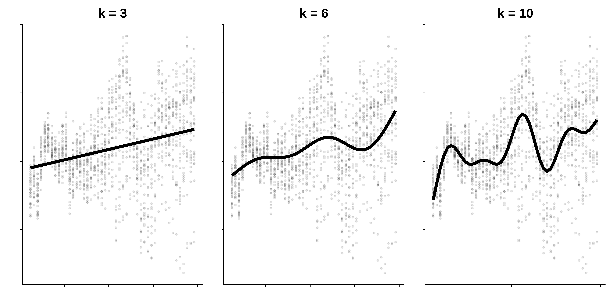
Selecting \(k\) basis dimensions
The key to getting a good model fit is therefore to balance the trade-off between two things:
- The smoothing parameter \(\lambda\), which penalizes wiggliness;
- The basis dimension \(k\), which allows the model to wiggle according to our data.
Have we optimized the tradeoff between smoothness ( \(\lambda\) ) and wiggliness ( \(k\) ) in our model?
In other words, have we chosen a k that is large enough?
k' edf k-index p-value
s(SampleDepth,RelativeDepth) 29 27.12521 0.9448883 0.08The EDF are very close to k, which means the wiggliness of the model is being overly constrained. .alert[The tradeoff between smoothness and wiggliness is not balanced].
Selecting \(k\) basis dimensions
We can refit the model with a larger k:
Estimate Std. Error t value Pr(>|t|)
(Intercept) 8.129512 0.4177659 19.459491 1.911267e-68
Season2 4.629964 0.6512205 7.109672 2.741865e-12 edf Ref.df F p-value
s(SampleDepth,RelativeDepth) 46.03868 54.21371 55.19817 0Is k large enough this time?
Choosing a distribution
As with any Normal model, we must check some model assumptions before continuing.
We can look at the residual plots with gam.check():
In addition to the plots, gam.check() also provides the output of k.check().
Choosing a distribution
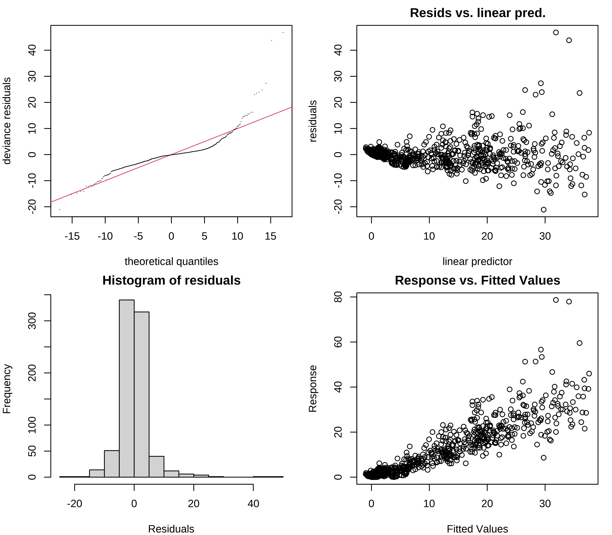
Pronounced heteroscedasticity and some strong outliers in the residuals
Choosing a distribution
For our interaction model, we need a probability distribution that allows the variance to increase with the mean.
One family of distributions that has this property and that works well in a GAM is the Tweedie family.
A common link function for Tweedie distributions is the \(log\).
Exercise 3
Exercise 3
- Fit a new model
smooth_interact_twwith the same formula as thesmooth_interactmodel but with a distribution from the Tweedie family (instead of the normal distribution) andloglink function. You can do so by usingfamily = tw(link = "log")insidegam(). - Check the choice of
kand the residual plots for the new model. - Compare
smooth_interact_twwithsmooth_interact. Which one would you choose?
Exercise 3 - Solution
1. First, let us fit a new model with the Tweedie distribution and a log link function.
Estimate Std. Error t value Pr(>|t|)
(Intercept) 1.3126641 0.03400390 38.60333 8.446478e-180
Season2 0.5350529 0.04837342 11.06089 1.961733e-26 edf Ref.df F p-value
s(SampleDepth,RelativeDepth) 43.23949 51.57139 116.9236 0Exercise 3 - Solution
2. Check the choice of k and the residual plots for the new model.
Next, we should check the basis dimension:
k' edf k-index p-value
s(SampleDepth,RelativeDepth) 59 43.23949 1.015062 0.8125The trade-off between \(k\) and EDF is well balanced. Great!
Exercise 3 - Solution
We should also verify the residual plots, to validate the Tweedie distribution:
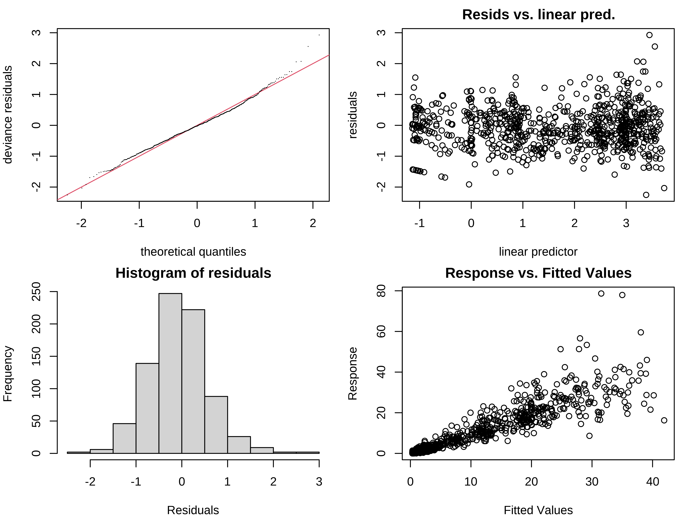
Exercise 3 - Solution
3. Compare smooth_interact_tw with smooth_interact. Which one would you choose?
df AIC
smooth_interact 49.47221 4900.567
smooth_interact_tw 47.86913 3498.490AIC allows us to compare models that are based on different distributions!
Using a Tweedie instead of a Normal distribution greatly improves our model!
6. Changing the basis
Other smooth functions
To model a non-linear smooth variable or surface, smooth functions can be built in different ways:
s() → for modelling a 1-dimensional smooth or for modeling interactions among variables measured using the same unit and the same scale
te() → for modelling 2- or n-dimensional interaction surfaces of variables that are not on the same scale. Includes main effects.
ti() → for modelling 2- or n-dimensional interaction surfaces that do not include the main effects.
Parameters of smooth functions
The smooth functions have several parameters that can be set to change their behaviour. The most common parameters are :
k → basis dimension - determines the upper bound of the number of base functions used to build the curve. - constrains the wigglyness of a smooth. - k should be < the number of unique data points. - the complexity (i.e. non-linearity) of a smooth function in a fitted model is reflected by its effective degrees of freedom (EDF).
Parameters of smooth functions
The smooth functions have several parameters that can be set to change their behaviour. The most often-used parameters are:
d → specifies that predictors in the interaction are on the same scale or dimension (only used in te() and ti()). - For example, in te(Time, width, height, d=c(1,2)), indicates that width and height are one the same scale, but not Time.
bs → specifies the type of basis functions. - the default for s() is tp (thin plate regression spline) and for te() and ti() is cr (cubic regression spline).
Example: Cyclical data
Let’s use a time series of climate data, with monthly measurements, to find a temporal trend in yearly temperature. We’ll use the Nottingham temperature time series for this, which is included in R:
Let’s plot the monthly temperature fluctuations for every year in the nottem dataset:
# the number of years of data (20 years)
n_years <- length(nottem) / 12
# categorical variable coding for the 12 months of the year, for every
# year sampled (so, a sequence 1 to 12 repeated for 20 years).
nottem_month <- rep(1:12, times = n_years)
# the year corresponding to each month in nottem_month
nottem_year <- rep(1920:(1920 + n_years - 1), each = 12)Example: Cyclical data
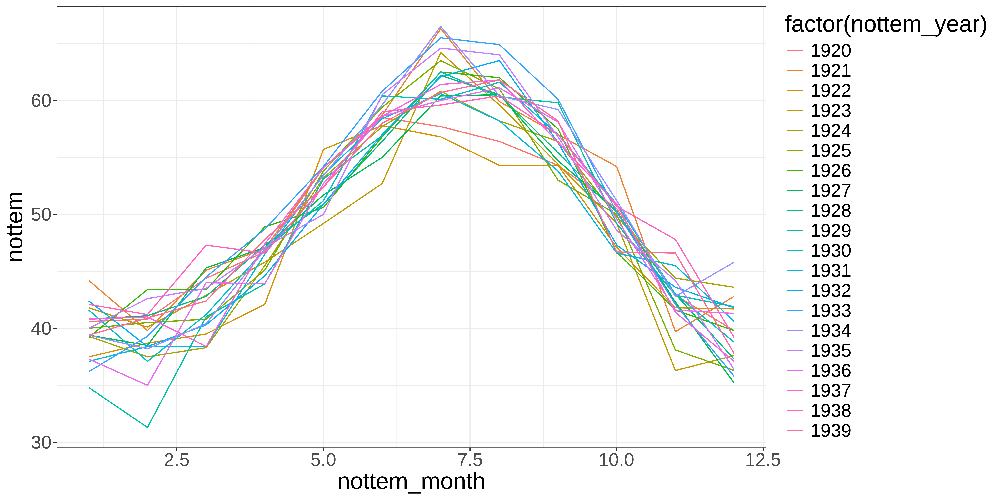
Example: Cyclical data
We can model both the cyclic change of temperature across months and the non-linear trend through years, using a cyclical cubic spline, or cc, for the month variable and a regular smooth for the year variable.
Example: Cyclical data
There is about 1-1.5 degree rise in temperature over the period, but within a given year there is about 20 degrees variation in temperature, on average. The actual data vary around these values and that is the unexplained variance.
7. Quick introduction to GAMMs
Dealing with non-independence
When observations are not independent, GAMs can be used to either incorporate:
- a correlation structure to model autocorrelated residuals, such as:
- the autoregressive (AR) model
- the moving average model (MA); or,
- a combination of both models (ARMA).
- random effects that model independence between observations at the same site.- random effects that model independence among observations from the same site.
Autocorrelation of residuals
Autocorrelation of residuals refers to the degree of correlation between the residuals (the differences between actual and predicted values) in a time series model.
In other words, if there is autocorrelation of residuals in a time series model, it means that there is a pattern or relationship between the residuals at one time and the residuals at other times.
Autocorrelation of residuals is usually measured using the ACF (autocorrelation function) and pACF (partial autocorrelation function) graphs, which show the correlation between residuals at different lags.
If the ACF or pACF graphs show significant correlations at non-zero lags, there is evidence of autocorrelation in the residuals and the model may need to be modified or improved to better capture the underlying patterns in the data.
Let’s see how this works with our year_gam model!
Model with correlated errors
Let’s have a look at a model with temporal autocorrelation in the residuals. We will revisit the Nottingham temperature model and test for correlated errors using the (partial) autocorrelation function.
Model with correlated errors
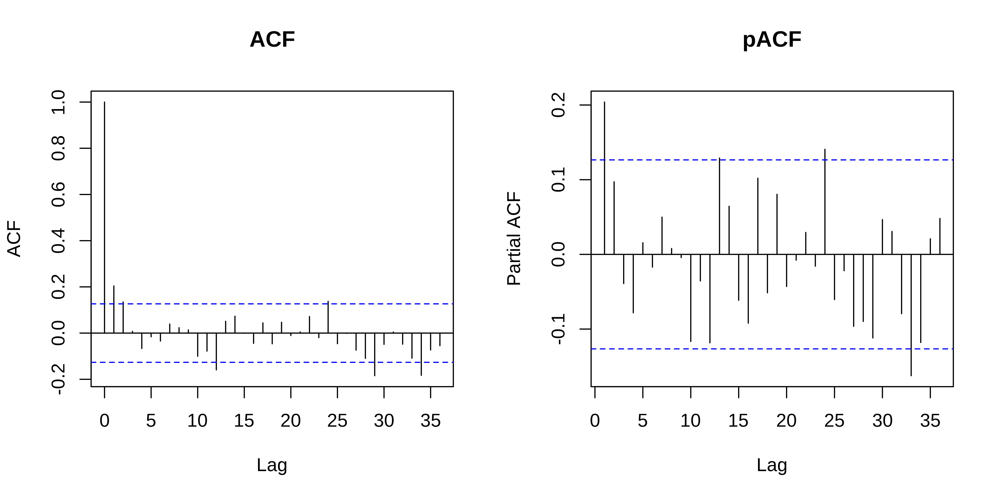
ACF evaluates the cross correlation and pACF the partial correlation of a time series with itself at different time lags (i.e. similarity between observations at increasingly large time lags).
The ACF and pACF plots are thus used to identify the time steps are needed before observations are no longer autocorrelated.
The ACF plot of our model residuals suggests a significant lag of 1, and perhaps a lag of 2. Therefore, a low-order AR model is likely needed.
Model with correlated errors
We can add AR structures to the model:
- AR(1): correlation at 1 time step, or
- AR(2) correlation at 2 time steps.
df <- data.frame(nottem, nottem_year, nottem_month)
year_gam <- gamm(
nottem ~ s(nottem_year) + s(nottem_month, bs = "cc"),
data = df
)
year_gam_AR1 <- gamm(
nottem ~ s(nottem_year) + s(nottem_month, bs = "cc"),
correlation = corARMA(form = ~ 1 | nottem_year, p = 1),
data = df
)
year_gam_AR2 <- gamm(
nottem ~ s(nottem_year) + s(nottem_month, bs = "cc"),
correlation = corARMA(form = ~ 1 | nottem_year, p = 2),
data = df
)Model with correlated errors
Which of these models performs the best?
df AIC
year_gam$lme 5 1109.908
year_gam_AR1$lme 6 1101.218
year_gam_AR2$lme 7 1101.598The AR(1) provides a significant increase in fit over the naive model (year_gam), but there is very little improvement in moving to the AR(2).
So, it is best to include only the AR(1) structure in our model.
Random effects
As we saw in the section about changing the basis, bs specifies the type of underlying base function. For random intercepts and linear random slopes we use bs = "re", but for random smooths we use bs = "fs".
3 different types of random effects in GAMMs (fac → factor coding for the random effect; x0 → continuous fixed effect):
- random intercepts adjust the height of other model terms with a constant value:
s(fac, bs = "re") - random slopes adjust the slope of the trend of a numeric predictor:
s(fac, x0, bs = "re") - random smooths adjust the trend of a numeric predictor in a nonlinear way:
s(x0, fac, bs = "fs", m = 1), where the argument m=1 sets a heavier penalty for the smooth moving away from 0, causing shrinkage to the mean.
GAMM with a random intercept
We will use the gamSim() function to generate a dataset with a random effect, then run a model with a random intercept using fac as the random factor.
GAMM with a random intercept
GAMM with a random intercept
We can plot the summed effects for the x0 without random effects, and then plot the predictions of all 4 levels of the random fac effect:
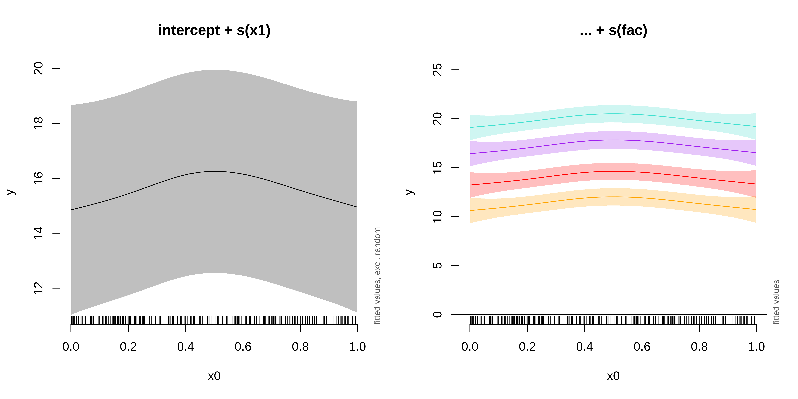
fac1 fac2 fac3 fac4
GAMM with a random slope
Next, we will run and plot a model with a random slope:
GAMM with a random slope
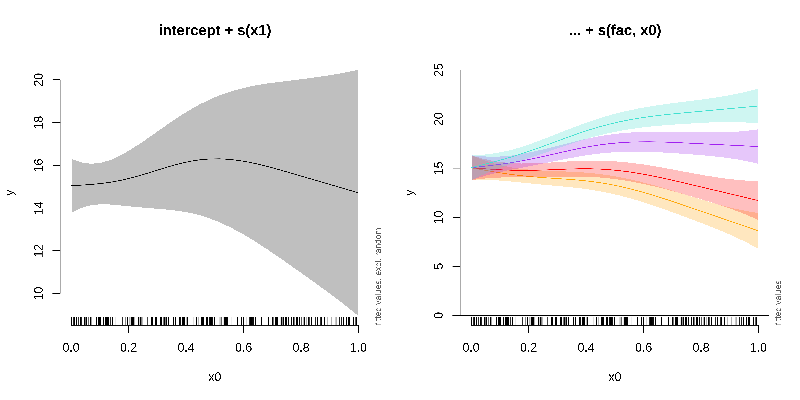
GAMM with a random intercept and slope
GAMM with a random intercept and slope
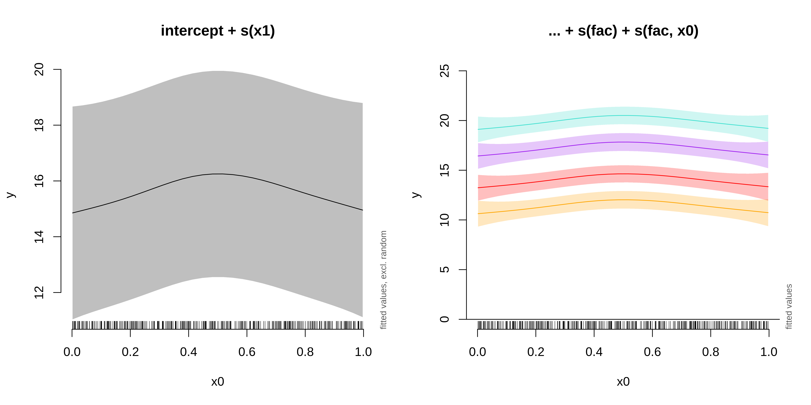
GAMM with a random smooth
Lastly, we will examine a model with a random smooth.
GAMM with a random smooth
GAMM with a random smooth
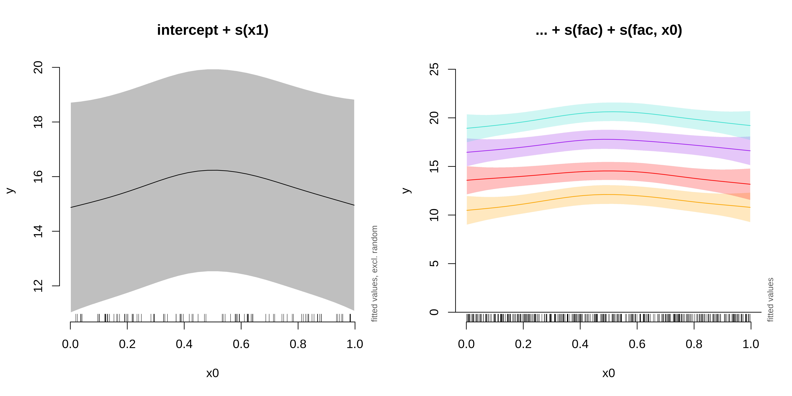
Here, if the random slope varied along x0, we would see different curves for each level.
GAMM
All of the mixed models from this section can be compared using AIC() to determine the best fit model
df AIC
gamm_intercept 8.141635 2205.121
gamm_slope 8.328850 2271.726
gamm_int_slope 8.143560 2205.123
gamm_smooth 11.150854 2207.386The best model among those we have built here would be a GAMM with a random effect on the intercept.
Final info
Resources
This class was a brief introduction to basic concepts, and popular packages to help you estimate, evaluate, and visualise GAMs in R, but there is so much more to explore!
* The book Generalized Additive Models: An Introduction with R by Simon Wood (the author of the mgcv package). * Simon Wood’s website, maths.ed.ac.uk/~swood34/. * Gavin Simpson’s blog, From the bottom of the heap. * Gavin Simpson’s package gratia for GAM visualisation in ggplot2. * Generalized Additive Models: An Introduction with R course by Noam Ross. * Overview GAMM analysis of time series data tutorial by Jacolien van Rij. * Hierarchical generalized additive models in ecology: an introduction with mgcv by Pedersen et al. (2019).
Finally, the help pages, available through ?gam in R, are an excellent resource.
Those slides were adapted from the QCBS workshop series https://r.qcbs.ca/workshops/
Happy modelling

BIO 8940
Note that the model
y_obs~s(x)gives exactly the same results asy_obs~s(x)+x. We used the s(x)+x to illustrate the nestedness of the model, but the +x can be omitted.